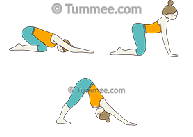

Starting Position:
Begin in a tabletop position on your hands and knees, with your wrists directly under your shoulders and your knees under your hips.
Knee Placement:
Bring your big toes together and spread your knees apart, creating space for your torso to fit between your thighs.
Sit Back:
Lower your hips back toward your heels, allowing your torso to rest between your thighs. Your forehead can come to the mat.
Arm Extension:
Extend your arms forward, reaching your hands out in front of you. Alternatively, you can bring your arms alongside your body with your palms facing up.
Relaxation:
Allow your forehead to rest on the mat, and let your neck relax. If your forehead doesn't touch the mat, you can place a yoga block, a folded blanket, or a cushion under your forehead for support.
Breathing:
Breathe deeply and slowly. Focus on inhaling and exhaling, allowing your breath to bring a sense of calm and relaxation.
Lengthening the Spine:
Lengthen your spine by reaching your tailbone toward your heels and stretching your arms forward. This gentle stretch helps release tension in the lower back.
Hold the Pose:
Hold Child's Pose for as long as feels comfortable, usually anywhere from 30 seconds to a few minutes. It can be used as a resting pose between more challenging asanas.
Exiting the Pose:
To come out of Child's Pose, gently walk your hands back toward your body, lifting your torso upright. You can return to a tabletop position or transition into the next pose in your sequence.

Home